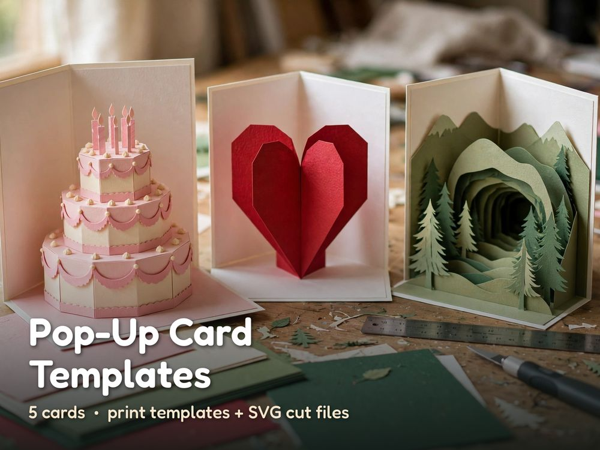

$15 USD — instant download
Pop-Up Card Templates — 5 Cards with Full-Size Print Templates + SVG Cut Files
Get it on GumroadA pop-up card gets kept long after a flat card is recycled, and making one is mostly a matter of cutting and folding in the right places. These pop-up card templates give you five complete designs: Gift Box Steps, a Three-Tier Birthday Cake, a Standing Heart, Twin Arches, and a layered Tunnel Card. Every card includes a full-size cutting template (US Letter, print at 100%), step-by-step assembly instructions with a diagram, and — for the four fold cards — a matching SVG cut file for Cricut, Silhouette or laser cutting.
The first four cards are each made from a single flat sheet of 8.5 × 5.5 inch cardstock that folds down to a standard A2 card (4.25 × 5.5 in), so they fit ordinary A2 envelopes. Cut lines are solid red and score lines are dashed blue, and the same convention is used in both the PDF templates and the SVG files, so what you learn on one card carries over to all the others. The tunnel card is the showpiece: three 4.25 × 5.5 inch frames — hills, pine trees and a printed back scene — joined by accordion strips to create a little paper landscape with real depth.
The materials list is short: cardstock in the 160–220 gsm range, a craft knife or scissors, a ruler, a scoring tool, and a cutting mat; the tunnel card also needs a little glue. The guide opens with a materials and golden-rules page — score before you cut, train every crease with a fold in both directions, and add a plain cover sheet to protect the mechanism — which prevents the two mistakes that ruin most first attempts.
Both work. Hand cutters get precise full-size templates and clear fold diagrams. Machine owners can load the SVGs and let a Cricut or Silhouette handle the fiddly curves of the cake tiers and arches. Either way, the finished cards fold completely flat for posting and spring open the moment the envelope is opened — which is, of course, the entire point.
This is a digital download — no physical item will be shipped. For personal use; please do not redistribute or resell the file.